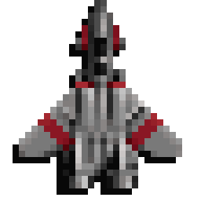

RAPTOR
CALL OF THE SHADOWS
The game needs your original data files (version 1.2+). Select them once — they will be remembered in this browser.
Loading engine…

RAPTORWEBCall of the Shadows · source port skynettx/raptor → WebAssembly
CALL OF THE SHADOWS
The game needs your original data files (version 1.2+). Select them once — they will be remembered in this browser.